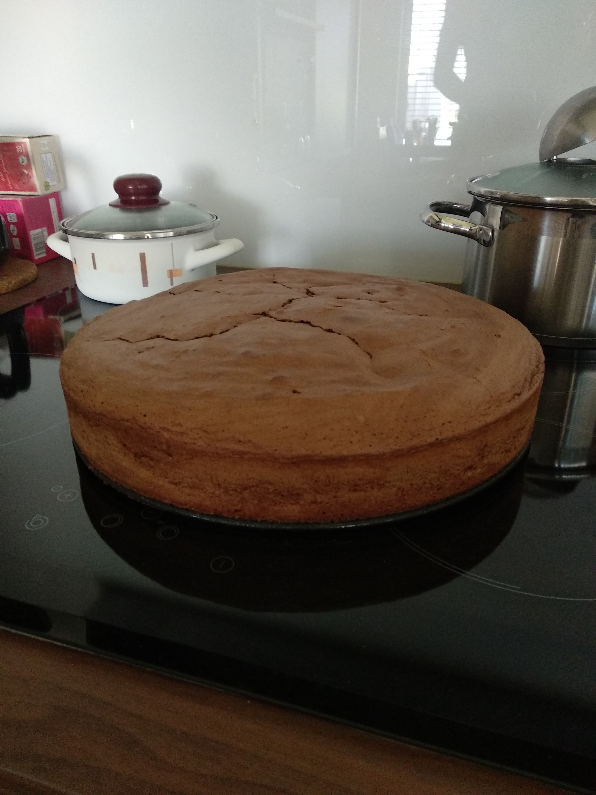
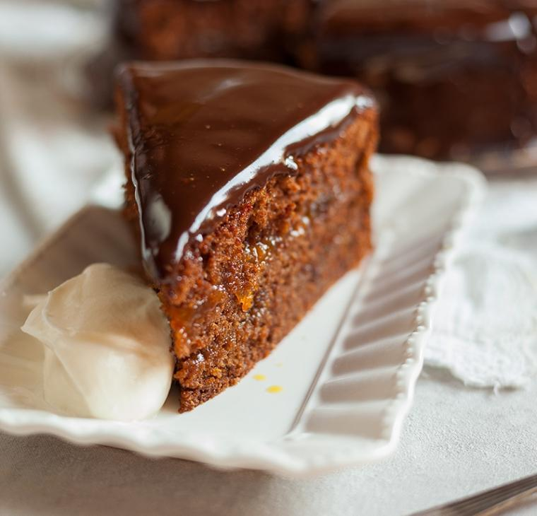

SESTAVINE(biskvit):
NADEV(marmelada in čokoladni preliv):
POSTOPEK:
Najprej nad soparo stopi čokolado, maslo in mleko in počakaj, da se ohladi.
V skledi zmešaj jajca, sladkor in vanili sladkor.
Dodaj ohlajeno čokolado in še naprej mešaj.
Dodaj še moko in pecilni prašek.
Premešaj, nato pa vlij v pekač.
PEČI na 180 stopinj ZA 45 minut.
Med pečenjem v 2dl vode zmešaj 1 žlico marmelade.
Ko je biskvit pečen ga pusti ohlajat približno pol ure, nato ga razreži na pol.
Spodnjo polovico navlaži z 2dl sladke tekočine.
Nato na polovico biskvita namaži marelično marmelado in drugo polovico položi na spodnjo polovico.
Sedaj še zgornjo polovico navlaži.
PRELIV:
Sedaj sladko smetano zagrej v posodi, a ne sme zavreti.
Ko je vroča, daj v sladko smetano čokolado, in mešaj, dokler se čokolada ne stopi.
Počakaj, da se preliv ohladi, nato ga pa prelij po biskvitu in daj v hladilnik.
